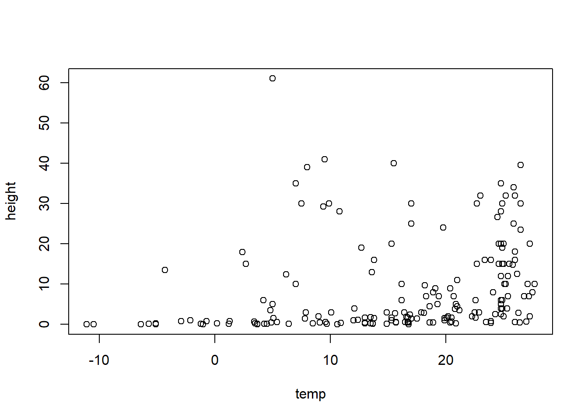
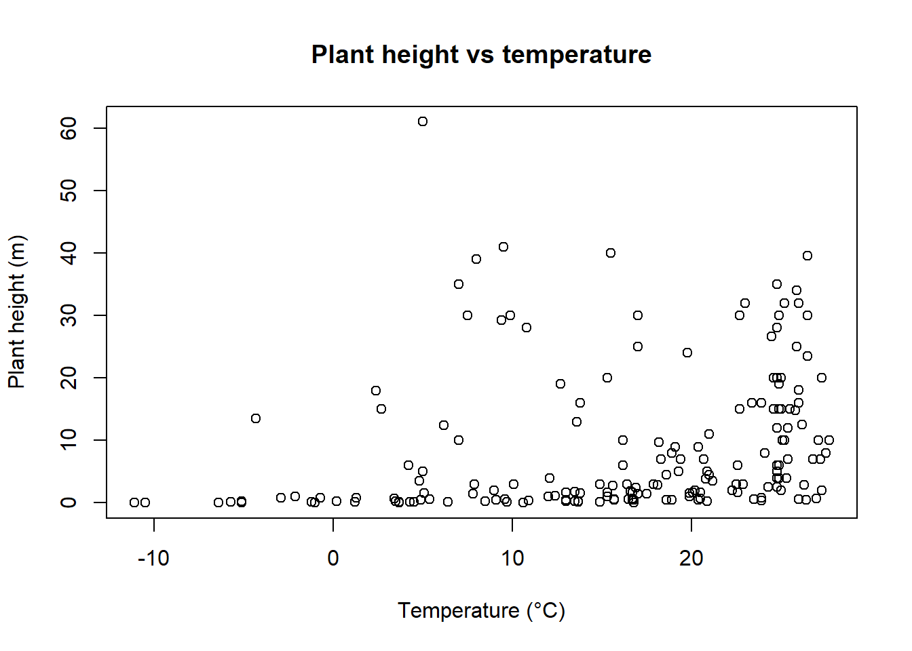
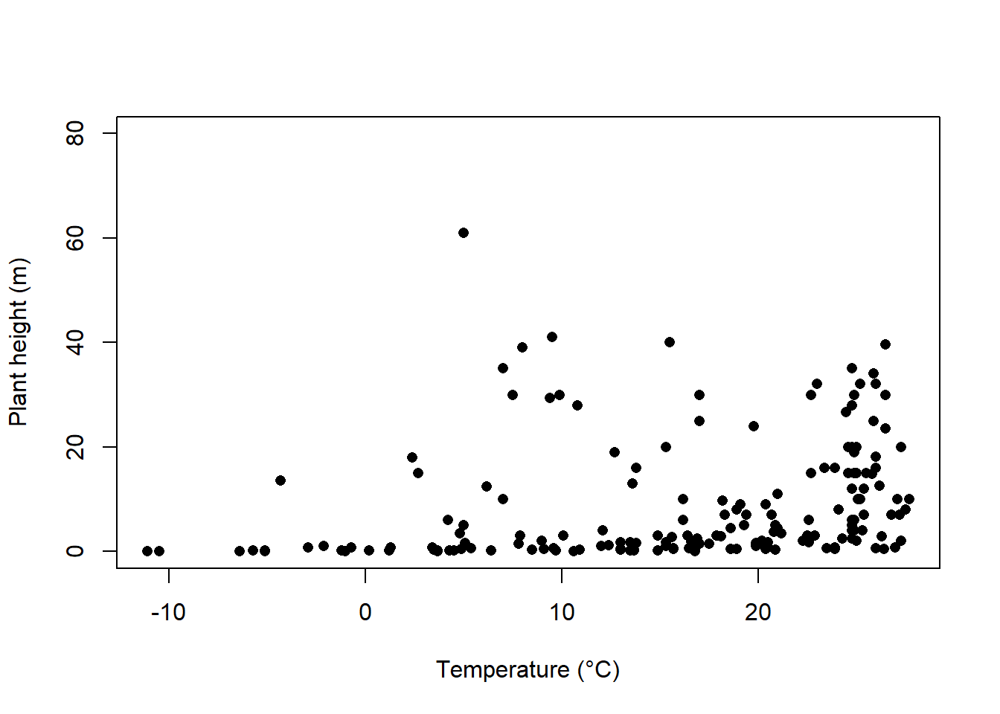
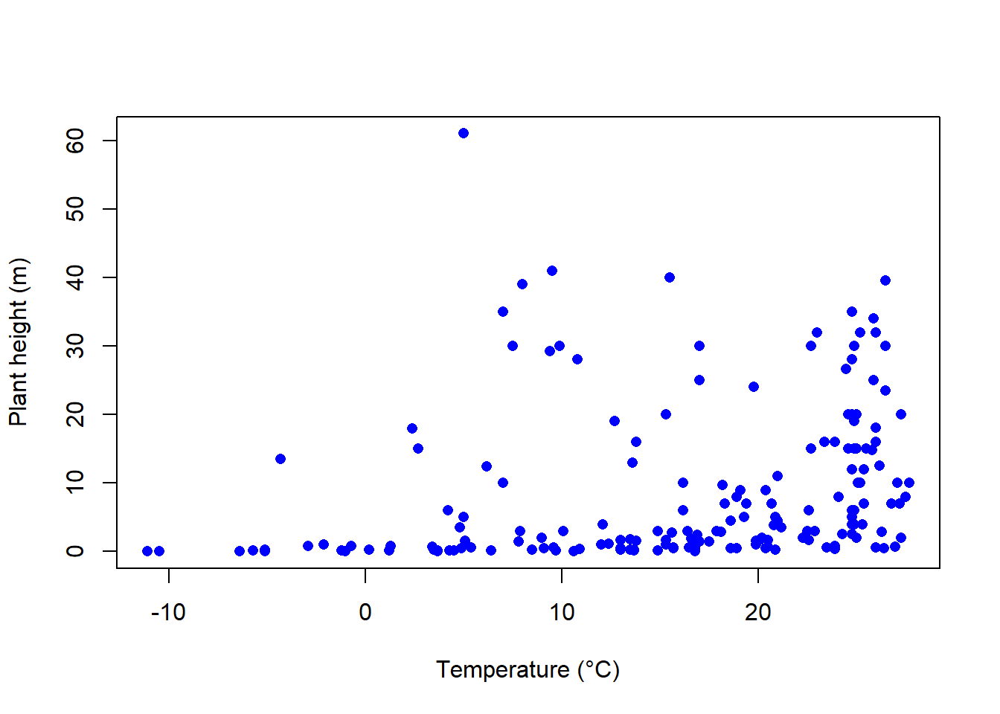
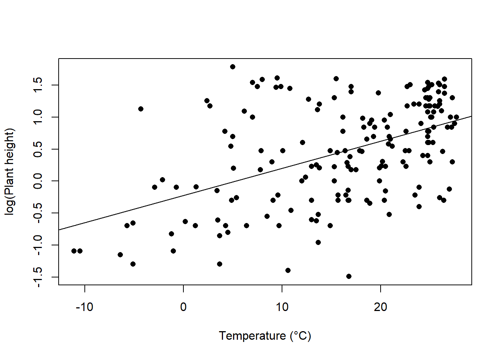

Plant_height <- read.csv(file = "Plant_height.csv", header = TRUE)Dos Variables Continuas
Visualizar la relación entre dos variables continuas es una de las técnicas gráficas más comúnmente utilizadas en las ciencias. Esta página detalla cómo producir diagramas de dispersión simples para mostrar cómo una variable continua está relacionada con otra.

Para este ejemplo práctico, descarga un conjunto de datos sobre las alturas de las plantas alrededor del mundo, Plant_height.csv, e impórtalo en R.
Diagramas de dispersión
Para visualizar cómo varía la altura de las plantas con relación a la temperatura, podemos usar un diagrama de dispersión simple, utilizando la función plot. Coloca la variable Y a la izquierda del símbolo tilde (~) y la variable X a la derecha. El argumento data=Plant_height le indica a R que busque esas dos variables en el data frame Plant_height.
plot(height ~ temp, data = Plant_height)
Si las dos variables que deseas visualizar están en diferentes objetos en R, simplemente usarías:
plot(y ~ x)donde y y X son dos vectores de igual longitud.
Formateo de gráficos
Los gráficos de dispersión se pueden construir utilizando el formato básico de R en el paquete “graphics”. El código a continuación detalla algunos de los comandos de formato más comúnmente utilizados para gráficos de dispersión simples. Estos comandos se pueden utilizar para cualquier función de visualización en el paquete “graphics”.
Agregar etiquetas de ejes o títulos
Las etiquetas de ejes se generan con los argumentos xlab e ylab. Los títulos se proporcionan con el argumento main. Ten en cuenta que las figuras en publicaciones científicas rara vez tienen un título, pero incluyen información sobre el gráfico en una leyenda de la figura presentada debajo del gráfico.
plot(height ~ temp, data = Plant_height, xlab = "Temperature (°C)", ylab = "Plant height (m)", main = "Plant height vs temperature")
Editar límites de ejes
Los límites de los ejes se establecen mediante los argumentos xlim e ylim, donde se requiere un vector de los límites mínimo y máximo. Por ejemplo, para establecer el eje Y con un mínimo de cero y un máximo de 80 m, y el eje X con un rango entre -20 y 30, utiliza:
plot(height ~ temp, data = Plant_height, xlab = "Temperature (°C)", ylab = "Plant height (m)", ylim = c(0, 80), xlim = c(-20, 30))Estilo de símbolos
La elección de los símbolos a utilizar en la visualización es amplia y las opciones se acceden mediante el argumento pch en los parámetros gráficos. Escribe ?pch para ver todas las opciones.

Los círculos sólidos pch=16 o pch=19 son a menudo la forma más clara de mostrar datos en un gráfico de dispersión.
plot(height ~ temp, data = Plant_height, xlab = "Temperature (°C)", ylab = "Plant height (m)", ylim = c(0, 80), pch = 16)
Agregar color
El color se puede agregar a cualquier parte de los gráficos (ejes, fuentes, etc.) utilizando el argumento col. Hay más de 600 colores que se pueden representar, escribe colours() para ver todo el rango.
Aquí simplemente cambiaremos el color de los símbolos a azul.
plot(height ~ temp, data = Plant_height, xlab = "Temperature (°C)", ylab = "Plant height (m)", pch = 16, col = "blue")
Agregando una línea de mejor ajuste
Para explorar aún más la relación entre dos variables, puedes agregar una línea ajuste. Por ejemplo, para agregar la línea de ajuste de una regresión lineal simple, usaríamos la función de modelado lineal, lm, para obtener la pendiente e intersección, y agregar esta línea al diagrama de dispersión a través del parámetro gráfico abline.
Consulta la página sobre regresión lineal para el análisis de altura de árboles versus temperatura en este conjunto de datos. La variable dependiente analizada fue la transformación logarítmica de la altura de los árboles (loght). Para graficar esto en función de la temperatura con la línea de ajuste del modelo lineal, usaríamos:
plot(loght ~ temp, data = Plant_height, xlab = "Temperature (°C)", ylab = "log(Plant height)", pch = 16)
abline(lm(loght ~ temp, data = Plant_height))
Más ayuda
Escribe ?plot y ?abline para obtener la ayuda de R sobre estas funciones.
Autores: Stephanie Brodie y Alistair Poore
Año: 2016
Última actualización: Nov. 2023